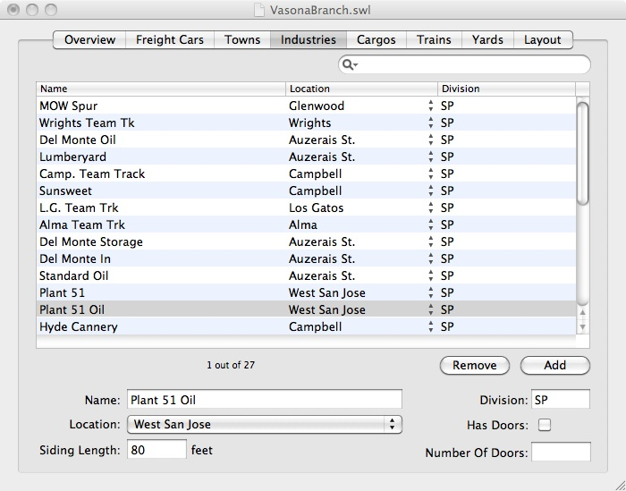

 The Industries tab lets you name the places where your freight cars will pick up and drop off freight cars.
To add a new freight car, press the "Add" button and provide the named fields. To remove an existing freight car, select it and press the "Remove" button.
Each freight car is associated with three pieces of information: its name, the town where it is located, and its division. If you have selected the "Spot cars at specific doors" option in the Layouts tab then the Industries tab shows two other bits of information: whether this industry will name the exact door or spotting location where a car should be placed, and if checked, the number of doors or spots at the industry. All these pieces of information can be changed at any time.
An industry can represent something large ("Chemical Plant") or a specific track in a large industry ("Chemical Plant Incoming", "Waste Track", "Chemical Plant Warehouse"). The industry name only needs to correspond to an explicit portion of track where your crews should place the car.
Industries can exist both in towns on the layout as well as "imaginary" industries in staging yards or offline towns. These can either be general ("Eastern Markets" is an industry on my layout, representing all traffic going to the east coast) or can be specific. Freight cars with cargos going to industries in staging or offline will be considered to arrive when they reach a location in staging.
The "Has Doors" field allows you to complicate switching by requiring your crews to place freight cars in a specific order or at a specific spot on an industry track. If your "Car Plant Delivery" industry track has the "Has Doors" checkbox set and 3 doors, then switchlists may state that one car should be placed at "Car Plant Delivery #3" and another at "Car Plant Delivery #1". SwitchList will only assign one car at a time to a given door.
Every layout also has a "Workbench" industry located in a "Workbench" town. If a freight car needs repair and is taken off the layout, place it in the "Workbench" industry.
See Also:
Detail: Divisions for cars and industries for more details on how a freight car's "Home Division" affects the assigning of cars to cargos.
{kind=link}